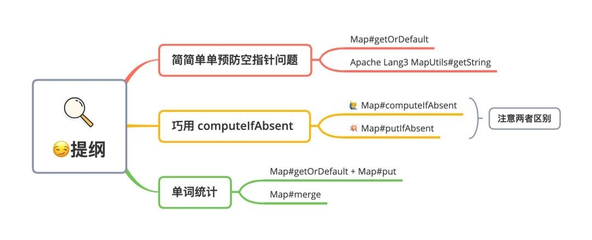

JDK8 应该是 Java 中最坚挺一个版本，这个版本新增很多特性，让我们开发起来多了很多便利。不过最近 Review 项目代码的时候发现，虽然很多项目工程已经使用了 JDK8，但是工程代码却很少使用到 JDK8 新特性、新方法。如果单从代码正确性上来说，老方式写法写当然没有什么问题，那唯一的缺点其实就是代码行数比较多，比较繁琐。那同样的需求，使用 JDK8 新方法，其实几行代码就可以搞定，这样代码就会变得非常简洁。今天就以三个比较常见的场景为例，教你几招，使用 JDK8 Map新增的方法简化代码开发。下面就来看看这次即将用到 Map 几个新方法：

预防空指针问题
日常开发中我们通常会从 Map获取元素，然后进行相关的业务处理，示例代码如下：
1 | Map<String, String> map = new HashMap(); |
如果就像示例代码直接处理，一旦 Map 中相应元素不存在，那么我们就会碰到空指针问题。为了解决这个问题，通常我们可以先判断一下元素是否为 null，如果不为 null，再做相应的业务处理。
1 | // 第一种 if 判空 |
这种方式唯一劣势就是代码处理上比较繁琐，不是很简洁。所以针对这种情况，其实可以使用条件运算符，设置一个默认空值，从而避免后续处理发生空指针。
1 | // 第一种 if 判空 |
这种方式比较简洁，所以日常开发中我比较喜欢用这种方式。
ps: 这里的前提，空字符串对于业务没有特殊意义。如果存在特殊意义，那就不能使用这种方式了。
getOrDefault
那如果使用 JDK8 ，其实就很方便了，我们就可以使用 Map.getOrDefault 直接代替条件运算符。
1 | // 等同于条件运算符的效果：Objects.isNull(value) ? "" : value; |
借助 Map.getOrDefault 一行代码直接搞定，就是这么简单。如果你还在使用 JDK8 之前的版本，没办法使用这个方法。没关系，我们可以借助 Apache Common-Lang3 提供的工具类 MapUtils 避免空指针。
1 | // Apache MapUtils |
MapUtils 这个工具类相对于 Map.getOrDefault 有一个好处，针对传入 Map 为 null 的情况，可以设置默认值。假设我们是从 POJO 对象获取 Map 参数，这个时候为了防止空指针，我们就需要提前做一个空指针的判断。不过如果使用 MapUtils，那我们就不需要判断是否为 null，方法内部已经封装这个逻辑。
1 | MapUtils.getString(pojo.getMap(),"支付", ""); |
巧用 computeIfAbsent
日常开发中，我们会碰到这类场景，需要一个键需要映射到多个值，这个时候我们可以使用 Map<K, List<V>> 这个结构。此时添加元素的时候，我们需要做一些判断，当内部元素不存在时候主动创建一个集合对象，示例代码如下：
1 | Map<String, List<String>> map = new HashMap(); |
上面的代码比较繁琐，到了 JDK8，Map 新增一个 computeIfAbsent 方法：
1 | default V computeIfAbsent(K key, |
如果 Map 中 key 对应的 value 不存在，则会将 mappingFunction 计算产生的值作为保存为该 key 的 value，并且返回该值。否则不作任何计算，将会直接返回 key 对应的 value。利用这个特性，我们可以直接使用 Map.computeIfAbsent 一行代码完成上面的场景，示例代码如下：
1 | map.computeIfAbsent("java框架", key -> new ArrayList<>()).add("Spring"); |
putIfAbsent
那其实 Map 中还有一个方法 putIfAbsent，功能跟 computeIfAbsent 比较类似。那刚开始使用的时候，误以为可以使用 putIfAbsent 完成上面的需求：
1 | // ERROR:会有 NPE 问题 |
那其实这是错误的，当 Map 中 key 对应 value 不存在的时候，putIfAbsent 将会直接返回 null。而 computeIfAbsent 将会返回 mappingFunction 计算之后的值，像上面的场景直接返回就是 new ArrayList。这一点需要注意一下，切勿用错方法，导致空指针。最后针对上面这种一个键需要映射到多个值，其实还有一个更优秀的解决办法，使用 Google Guava 提供的新集合类型 Multiset，以此快速完成一个键需要映射到多个值的场景。示例代码如下：
1 | ArrayListMultimap<Object, Object> multiset= ArrayListMultimap.create(); |
merge
单词统计
假设有如下需求，我们需要统计一段文字中相关单词出现的次数。那实现方式其实很简单，使用 Map 存储相关单词的次数即可，示例代码如下：
1 | Map<String, Integer> countMap = new HashMap(); |
这类代码是不是很熟悉？同样比较繁琐。
接下来我们可以使用 JDK8 Map 新增方法进行改造，这次使用上面用过的 getOrDefault 再加 put 方法快速解决，示例代码如下：
1 | // getOrDefault |
那其实我们还有一种办法，这次我们使用 Map.merge 这个新方法，一句代码完成上述需求，示例代码如下：
1 | countMap.merge("java", 1, Integer::sum); |
说真的，刚看到 merge 这个方法的时候还是有点懵，尤其后面直接使用 lambda 函数，让人不是很好理解。这里先将 lambda 函数还原成正常类，给大家着重解释一下这个方法：
1 | countMap.merge("java", 1, new BiFunction<Integer, Integer, Integer>() { |
用上面代码说明一下 merge 方法，如果 java 这个值在 countMap 中不存在，那么将会其对应的 value 设置为 1。那如果 java 在 countMap 中存在，则会调用第三个参数 remappingFunction 函数方法进行计算。remappingFunction 函数中，oldValue 代表原先 countMap 中 java 的值，newValue 代表我们设置第二个参数1，这里我们将两者相加，刚好完成累加的需求。
学生的总成绩计算
在举个例子：假设我们有这么一段业务逻辑，我有一个学生成绩对象的列表，对象包含学生姓名、科目、科目分数三个属性，要求求得每个学生的总成绩。
1 | private List<StudentScore> buildATestList() { |
我们先看一下常规做法：
1 | ObjectMapper objectMapper = new ObjectMapper(); |
然后再看一下 merge() 是怎么做的：
1 | Map<String, Integer> studentScoreMap2 = new HashMap<>(); |
merge() 简介
merge() 可以这么理解：它将新的值赋值到 key（如果不存在）或更新给定的 key 值对应的 value，其源码如下：
1 | default V merge(K key, V value, BiFunction<? super V, ? super V, ? extends V> remappingFunction) { |
我们可以看到原理也是很简单的，该方法接收三个参数，一个 key 值，一个 value，一个 remappingFunction ，如果给定的 key 不存在，它就变成了 put(key, value) 。但是，如果 key 已经存在一些值，我们 remappingFunction 可以选择合并的方式，然后将合并得到的 newValue 赋值给原先的 key。
使用场景：这个使用场景相对来说还是比较多的，比如分组求和这类的操作，虽然 stream 中有相关 groupingBy() 方法，但如果你想在循环中做一些其他操作的时候，merge() 还是一个挺不错的选择的。
最后
这次主要从个人日常碰到几个场景出发，给大家对比了一下使用 JDK8 Map 新增方法只会，两者代码区别。从上面可以很明显看出，使用新增方法之后，我们可以用很少的代码可以完成，整体看起来变得非常简洁。不过 JDK8 之后很多方法都会用到 lambda 函数，不熟悉的话，其实比较难以理解代码。不过也还好，我们只要在日常编码过程中，刻意去练习使用，很快就能上手。
If you like this blog or find it useful for you, you are welcome to comment on it. You are also welcome to share this blog, so that more people can participate in it. If the images used in the blog infringe your copyright, please contact the author to delete them. Thank you !